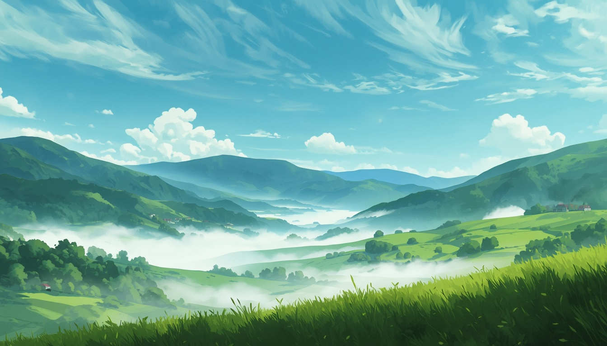
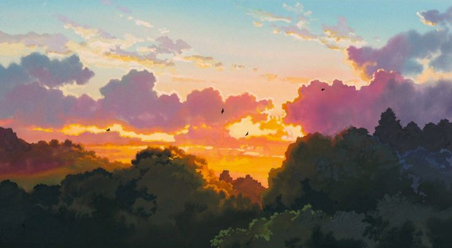
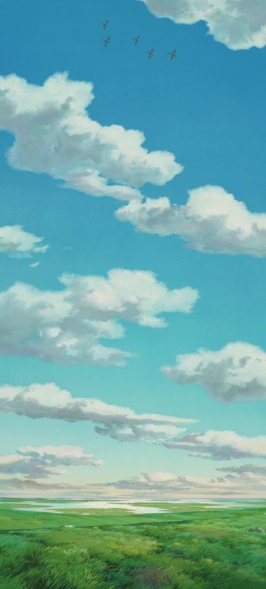

Tink's Sky Studio
Only the sky, the clouds and the hills. Pick a time of day, shape everything, then press
Copy for Claude
and paste it in the chat.
Time of day
Time passing
Season
Copy for Claude
Reset this time
Reset all



Copied
Drag to look around · scroll to look up and down